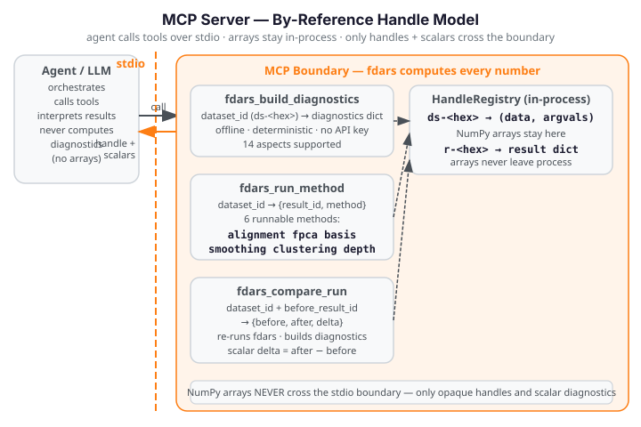

MCP Server¶
Illustrative fences — not run in the docs build
All Python fences on this page are illustrative only. They require
pip install "fdars[mcp,advisor]" (mcp>=2.0.0, Python 3.10+) and are
not executed during the docs build. The docs build does not depend on
the [mcp] extra or Python 3.10+.
The fdars-advisor MCP server extends the Python API with the
full interpret → recommend → re-run → compare agentic loop. Where the
Python API returns an Advice object and stops, the MCP server gives a
language model three composable tools so it can re-run fdars with adjusted
parameters and observe a deterministic, fdars-computed before/after delta —
without any fabricated numbers ever crossing the tool boundary.
See the overview for the grounding invariant and the three-surface architecture. The Agent Skill page documents the packaged skill that orchestrates these tools automatically.

Handle model¶
The MCP server uses a by-reference HandleRegistry to keep large NumPy
arrays inside the process and out of the JSON transport layer.
How handles work¶
Before calling any tool, the client registers a dataset (observation matrix +
evaluation grid) by calling registry.store_dataset(data, argvals). The
registry stores the arrays in-process and returns an opaque dataset handle
of the form ds-<8-hex-chars>. From that point on, tools exchange only the
handle string — the arrays never appear in JSON output.
When a tool runs an fdars method and produces a result dict, the raw result
(which may contain NumPy arrays) is stored via registry.store_result(result),
returning a result handle of the form r-<8-hex-chars>. Only this handle
— and scalar diagnostic values — ever cross the tool boundary.
from fdars.mcp._registry import registry
# Register the dataset once before calling any tool
dataset_id = registry.store_dataset(data, argvals)
# dataset_id is e.g. "ds-3fa2c1b4"
# After a tool run, retrieve the stored result if needed in-process
result = registry.get_result(result_id)
Registry methods¶
| Method | Signature | Returns |
|---|---|---|
store_dataset |
store_dataset(data, argvals) -> str |
Dataset handle ds-<hex> |
get_dataset |
get_dataset(ds_id) -> (data, argvals) |
(np.ndarray, np.ndarray) tuple |
store_result |
store_result(result) -> str |
Result handle r-<hex> |
get_result |
get_result(r_id) -> dict |
Stored result dict |
clear |
clear() -> None |
Clears all datasets and results |
Why by-reference¶
The grounding invariant requires that fdars computes every number. The by-reference model enforces an additional efficiency and grounding property: large NumPy arrays — smoothed curves, FPCA scores, cluster centers — stay in the in-process registry and only opaque handle strings + scalar diagnostics travel as JSON over the stdio transport. This keeps the tool boundary clean, prevents arrays from being fabricated or rounded in transit, and avoids serialising potentially megabyte-scale matrices into MCP messages.
The registry is a module-level singleton (registry = HandleRegistry() in
fdars.mcp._registry). Client and server share the same in-process dict over
stdio, so a handle registered before launching run_stdio() is immediately
accessible to all tool handlers.
stdio setup¶
The fdars-advisor MCP server communicates over stdio only (v2.0). Start the
server with run_stdio() — the console-script entry point that blocks until
stdin is closed:
from fdars.mcp.server import run_stdio
# Blocks — call from a console-script or __main__ guard, never from a tool handler
run_stdio()
The installed package registers a fdars-mcp-server console script that calls
run_stdio() directly. A client (e.g. Claude Desktop or a custom MCP host)
launches this process and communicates over stdin/stdout:
# Install the MCP extra (Python 3.10+ required):
pip install "fdars[mcp,advisor]"
# Start the server — the client writes JSON-RPC to its stdin and reads from stdout:
fdars-mcp-server
run_stdio() calls mcp.run(transport="stdio") on the MCPServer("fdars-advisor")
instance. The tool handlers (fdars_build_diagnostics, fdars_run_method,
fdars_compare_run) are transport-agnostic — they do not reference stdio in any
way. A future HTTP/SSE transport would only require changing the transport argument
in run_stdio, not in any tool code.
Tools¶
Three tools are exposed over MCP. All tool handlers are synchronous (def, not
async def) — fdars methods are synchronous Rust calls via PyO3, and wrapping
in an executor is unnecessary.
Supported methods (all three tools):
"alignment", "fpca", "basis", "smoothing", "clustering" (case-insensitive).
fdars_build_diagnostics¶
Build offline diagnostics for an fdars dataset or result. Delegates to
advisor.build_diagnostics — deterministic, offline, no API key required.
Parameters
| Parameter | Type | Default | Description |
|---|---|---|---|
dataset_id |
str |
— | Handle to the registered dataset. Obtain via registry.store_dataset(data, argvals). |
method |
str |
— | One of "alignment", "fpca", "basis", "smoothing", "clustering". |
result_id |
str or None |
None |
Handle to a stored result dict (e.g. from a prior fdars_run_method call). When None, the raw dataset data matrix is used as the result input. |
with_argvals |
bool |
True |
When True, passes the dataset's argvals array to build_diagnostics for distance metrics. |
Returns
A JSON-serialisable dict — the same shape as advisor.build_diagnostics output (per-method keys;
see the Python API for the key inventory per method). The diagnostics dict is also
stored as a new result handle in the registry (available via registry.get_result), though the
handle is not returned.
Raises
ValueError if method is not in the supported set.
KeyError if dataset_id or result_id is not found in the registry.
fdars_run_method¶
Run any of the six supported fdars methods on a registered dataset. Returns only an opaque result handle and the method name — arrays never leave the tool boundary.
Parameters
| Parameter | Type | Default | Description |
|---|---|---|---|
dataset_id |
str |
— | Opaque handle returned by registry.store_dataset(data, argvals). The dataset must be pre-registered. |
method |
str |
— | One of "alignment", "fpca", "basis", "smoothing", "clustering". Case-insensitive. |
lambda_ |
float or None |
None |
Warp penalty for alignment (default 0.0) or regularisation for smoothing. Ignored for fpca, basis, clustering. |
n_basis |
int or None |
None |
Number of B-spline basis functions for smoothing (pspline_fit_gcv). Default 15. Ignored for other methods. |
n_comp |
int or None |
None |
Number of FPCA components for fpca. Default 3. Ignored for other methods. |
k |
int or None |
None |
Number of clusters for clustering (kmeans_fd). Default 3. Ignored for other methods. |
seed |
int or None |
None |
RNG seed for clustering. Default 42. Ignored for other methods. |
Returns
The raw fdars result — which may contain NumPy arrays — is stored in the
registry under result_id. Only the handle string and the method name are
returned. Arrays never appear in JSON output (by-reference invariant).
Per-method parameter mapping (only the listed parameter is used; others are silently ignored):
| Method | fdars function | Active parameter(s) | Default(s) |
|---|---|---|---|
alignment |
fdars.alignment.karcher_mean |
lambda_ |
0.0 |
fpca |
fdars.regression.fpca |
n_comp |
3 |
basis |
fdars.basis.basis_nbasis_cv |
lambda_ |
1.0 |
smoothing |
fdars.basis.pspline_fit_gcv |
n_basis |
15 |
clustering |
fdars.clustering.kmeans_fd |
k, seed |
3, 42 |
Raises
ValueError if method is not in the supported set.
KeyError if dataset_id is not in the registry.
fdars_compare_run¶
Re-run an fdars method with new parameters and return a deterministic before/after delta. This is the TOOL-03 agentic re-run/compare tool — the key difference between the MCP surface and the recommend-only Python API.
Parameters
| Parameter | Type | Default | Description |
|---|---|---|---|
dataset_id |
str |
— | Opaque handle for the registered dataset. |
method |
str |
— | One of "alignment", "fpca", "basis", "smoothing", "clustering". |
before_result_id |
str |
— | Handle ID for the prior run result (from fdars_run_method or fdars_build_diagnostics). |
lambda_ |
float or None |
None |
After-run warp penalty for alignment or regularisation for smoothing. |
n_basis |
int or None |
None |
After-run basis function count for smoothing. Default 15. |
n_comp |
int or None |
None |
After-run FPCA component count for fpca. Default 3. |
k |
int or None |
None |
After-run cluster count for clustering. Default 3. |
seed |
int or None |
None |
After-run RNG seed for clustering. Default 42. |
Returns
A JSON-serialisable dict with five keys:
| Key | Type | Description |
|---|---|---|
before_result_id |
str |
The handle ID of the before result (same as the input argument). |
after_result_id |
str |
The handle ID of the newly stored after result. |
before |
dict |
Full diagnostics dict from advisor.build_diagnostics for the before run. |
after |
dict |
Full diagnostics dict from advisor.build_diagnostics for the after run. |
delta |
dict |
Scalar numeric differences: after[key] - before[key] for every key where both values are a finite float or int (booleans excluded). |
The delta dict is the observable: every value is fdars-computed. An empty
delta means no finite scalar keys were shared between the two diagnostics dicts.
Raises
ValueError if method is not in the supported set, or if an after-parameter key is not in
{"lambda_", "n_basis", "n_comp", "k", "seed"}.
KeyError if dataset_id or before_result_id is not in the registry.
Re-run / compare loop¶
The following example mirrors examples/mcp_recipe.py — the canonical
register → run → compare recipe shipped with the package. It uses the
Canadian Weather dataset (35 weather stations × 365 daily temperature points).
Step 1 — Register the dataset¶
import numpy as np
from fdars import datasets
from fdars.mcp._registry import registry
# Load the Canadian Weather dataset
ds = datasets.load_canadian_weather()
X = np.asarray(ds.data.data, dtype=float) # shape (35, 365)
day = np.asarray(ds.argvals, dtype=float) # shape (365,) — day-of-year grid
# Register in the handle registry before calling any tool
dataset_id = registry.store_dataset(X, day)
# dataset_id is e.g. "ds-3fa2c1b4"
Step 2 — Run the before method¶
Call fdars_run_method (or the underlying run_method directly) with
method="smoothing" and n_basis=15. The tool maps smoothing to
fdars.basis.pspline_fit_gcv, stores the raw result in the registry, and
returns only the result handle:
from fdars.mcp.server import fdars_run_method
before_handle = fdars_run_method(dataset_id, method="smoothing", n_basis=15)
# Returns: {"result_id": "r-a1b2c3d4", "method": "smoothing"}
before_result_id = before_handle["result_id"]
The raw result (fitted curves, EDF, GCV value, AIC, BIC) stays in the registry. Only the handle ID crosses the tool boundary.
Step 3 — Compare with new parameters¶
Call fdars_compare_run with the same dataset, the same method, the before
result handle, and the new after-parameter (n_basis=25 — more basis
functions, potentially smoother fit):
from fdars.mcp.server import fdars_compare_run
compare_result = fdars_compare_run(
dataset_id,
method="smoothing",
before_result_id=before_result_id,
n_basis=25,
)
fdars_compare_run re-runs pspline_fit_gcv with n_basis=25, builds
diagnostics for both the before and after runs via advisor.build_diagnostics,
and returns the full before/after dicts plus the scalar delta.
Step 4 — Read the observable delta¶
after_result_id = compare_result["after_result_id"]
before_diag = compare_result["before"] # full diagnostics, n_basis=15 run
after_diag = compare_result["after"] # full diagnostics, n_basis=25 run
delta = compare_result["delta"] # after - before, finite scalar keys only
# delta contains scalar keys such as:
# {"optimal_edf": 2.3, "optimal_gcv": -0.04, ...}
# Every value is fdars-computed — no fabricated numbers.
print(f"Delta [{len(delta)} scalar keys]:")
for key, change in delta.items():
sign = "+" if change >= 0 else ""
print(f" {key}: {sign}{change:.6f}")
The delta covers every key present in both the before and after diagnostics
where both values are a finite scalar float or int (booleans and
non-scalar values are excluded). For smoothing via pspline_fit_gcv, the
scalar diagnostic keys typically include optimal_edf, optimal_gcv, rss,
aic, and bic — all fdars-computed, none fabricated.
The closed loop¶
After reading the delta, a language model can feed the updated after
diagnostics back into fdars_build_diagnostics (for a fresh interpretation
pass) or call fdars_compare_run again with another parameter change — forming
the full interpret → recommend → re-run → compare loop described in the
overview.
Next steps¶
- Python API — the recommend-only surface (
build_diagnostics+advise) - Overview — grounding invariant and three-surface architecture
- Agent Skill — the packaged skill that orchestrates these tools automatically